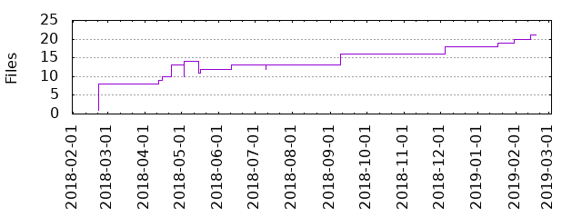

Files
General
Activity
Authors
Files
Lines
Tags
Total files
21
Total lines
3535
Average file size
7210.81 bytes
File count by date

Extensions
Extension
Files (%)
Lines (%)
Lines/file
6 (28.57%)
1062 (30.04%)
177
lock
1 (4.76%)
1014 (28.68%)
1014
md
1 (4.76%)
22 (0.62%)
22
py
2 (9.52%)
703 (19.89%)
351
rst
2 (9.52%)
42 (1.19%)
21
swp
1 (4.76%)
6 (0.17%)
6
yaml
8 (38.10%)
690 (19.52%)
86